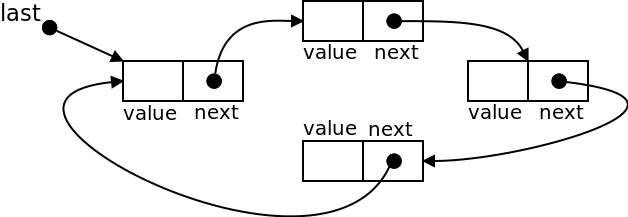
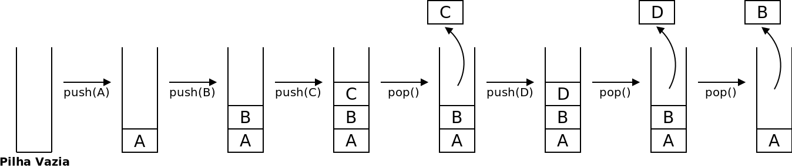
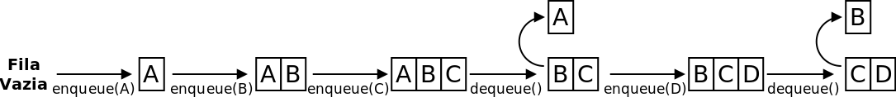

É encorajado que vão falando com os docentes e outros colegas se tiverem dificuldades. No entanto, qualquer ajuda mais direta que tenham recebido de outros colegas deve ser reconhecida nos comentário do programa que submetem. Depois do prazo os problemas continuarão disponíveis no Mooshak, mas as submissões não contarão para a sua nota.
Cada aula vale 10% da nota desta componente. Como existem 12 aulas com submissões, pode ter pontuação máxima mesmo sem ter feito tudo.
Para um problema contar tem acertar todos os testes (ou seja, ter accepted). Mesmo que resolva todos os problemas, o máximo numa aula é de 100%.
Para ter 100% bastará sempre resolver os exercícios do guião principal.
Conteúdos das teóricas
Nesta aula iremos continuar a usar listas ligadas, bem como Pilhas e Filas. Será por isso conveniente recordar o que foi dado nas teóricas:
Nas teóricas falamos de mais tipos de listas ligadas, incluindo a noção de listas circulares, onde o último elemento "aponta" para o primeiro, de forma circular:

Testando as listas circulares.
Faça download do código dado nas teóricas:
CircularLinkedList - lista ligada circular (ex operações: tamanho, adicionar no início e no fim, retirar no início e no fim, rodar elementos)
Compile o código e execute a classe TestCircularLinkedList para ver as listas circulares em funcionamento.
Procure acompanhar cada uma das linhas de código e o seu efeito. Note em particular o que faz o método rotate() que "roda" os elementos, colocando o primeiro elemento no final da lista e avançado o segundo elemento para o início da fila:
Resolvendo um problema.
Use listas circulares para resolver e submeter o problema [ED006] Pim, Pam, Pum, disponível no Mooshak de EDados no "Volume 3 (Listas Ligadas)".
Comece por ler a linha com a frase de contagem para uma String (use o método nextLine() da classe Scanner e não se esqueça de "escapar" o resto da linha anterior).
Para saber o tamanho da frase basta por exemplo usar o método split da classe String. Se a linha estiver guardada numa string chamada line, então line.split(" ") devolve um array contendo as palavras e line.split(" ").length devolve a quantidade de elementos nesse array).
Agora é só simular o jogo a acontecer. De cada vez chame rotate() o número de vezes necessário (o tamanho da frase menos um, porque já está no primeiro elemento da contagem) e remova o primeiro elemento (método removeFirst()). No final é só ver qual a criança que sobrou na lista circular (método getFirst()).
Exercício 2) Pilhas
Um TAD Pilha é uma sequência de elementos LIFO (Last-In-First-Out) onde temos duas operações para modificar o conteúdo:
podemos adicionar um elemento x chamando push(x)
podemos remover e obter o elemento que adicionamos mais recentemente usando pop()

Testando a API das Pilhas.
Faça download do código dado nas teóricas (o TAD Pilha é o interface MyStack - o nome é este para distinguir do próprio Java). A implementação dada usa listas duplamente ligadas, pelo que também precisas de as ir buscar
TAD MyStack - Uma pilha (coleção LIFO: último a entrar é o primeiro a sair)
Compile o código e execute a classe TestMyStack para ver a pilha em funcionamento.
Procure acompanhar cada uma das linhas de código e o seu efeito. Note em particular os métodos do TAD (basta ver o interface) e como criar a Pilha (a variável do tipo do interface atribuída a uma implementação desse mesmo interface).
Basta retirar n elementos da pilha (usando a operação pop) e depois voltar a inserir pela ordem correcta (usando a operação push). À medida que vai retirando os elementos pode por exemplo guardá-los... num array.
Nota: se quiser testar o método pode optar por adicionar um main à sua classe ED194 (não será chamado no Mooshak) ou criar uma classe adicional no seu computador para fazer chamadas a ED194.
// Pode submeter uma classe como esta.// - No seu computador pode testar com "java ED195"// - O mooshak apenas irá chamar o seu método reversepublicclassED194{// Método que deve implementarpublicstaticvoidreverse(MyStack<Integer> s,int n){// Deve colocar aqui o código para resolver o problema}// Main apenas para testar no seu computadorpublicstaticvoidmain(String[] args){
MyStack<Integer> s =new LinkedListStack<Integer>();for(int i=5; i>0; i--)
s.push(i);
System.out.println(s);// Antes da chamada a reverse
reverse(s,3);
System.out.println(s);// Depois da chamada a reverse}}
Para iterar sobre todos os caracteres da string s pode usar o método charAt(int index) da classe String. Por exemplo, s.charAt(i) devolve o i-ésimo caracter da string s. Note que as posições válidas vão desde 0 até s.length()-1.
Use uma pilha de caracteres (MyStack<Character>) para ir guardando os parenteses de abertura: '(' e '['. Cada vez que apanhar um parenteses de fecho, verifique se corresponde ao tipo do último parenteses aberto (que está no topo da pilha).
Qual o estado final da pilha numa expressão bem formada? Como pode determinar que ficaram parenteses por fechar?
Exercício 3) Filas
Um TAD Fila é uma sequência de elementos FIFO (First-In-First-Out) onde temos duas operações para modificar o conteúdo:
podemos adicionar um elemento x chamando enqueue(x)
podemos remover e obter o elemento que adicionamos há mais tempo usando dequeue()

Testando a API das Filas.
Faça download do código dado nas teóricas (o TAD Fila é o interface MyQueue - o nome é este para distinguir do próprio Java):
TAD MyQueue - Uma pilha (coleção FIFO: o primeiro a entrar é o primeiro a sair)
Compile o código e execute a classe TestMyQueue para ver a pilha em funcionamento.
Procure acompanhar cada uma das linhas de código e o seu efeito. Note em particular os métodos do TAD (basta ver o interface) e como criar a Pilha (a variável do tipo do interface atribuída a uma implementação desse mesmo interface).
Um primeiro problema com filas
Resolva e submeta o problema [ED196] Duas filas, disponível no Mooshak de EDados no "Volume 4 (Pilhas e Filas)".
A ideia é ir retirando elementos à fila (dois a dois) enquanto a fila não estiver vazia. Que método da fila serve para verificar se a fila ainda tem elementos?
Consoante a operação, devemos colocar logo numa certa lista, ou comparar os tamanhos. Que método da fila serve para ver o tamanhos de uma fila?
Comece por criar uma nova fila de inteiros que irá conter a união (MyQueue<Integer> q = new LinkedListQueue<Integer>();)
Depois, a ideia é "espreitar" o primeiro elemento de cada fila e escolher o que for menor. Que método da fila serve para ver o primeiro elemento?
Se uma das filas ficar vazia, o que falta fazer?
Exercícios extra para consolidação de conhecimentos
Mais problemas de pilhas e filas
Tem disponíveis no Mooshak de EDados, no "Volume 4 (Pilhas e Filas)", mais alguns problemas envolvendo pilhas e filas. Estes são problemas mais "completos", com várias camadas, onde a representação mais natural dos dados é precisamente uma pilha ou uma fila:
Listas Duplamente Ligadas
Espreite as classes de listas duplamente ligadas, teste-as e implemente nelas os métodos que fez na aula anterior para listas simples (problemas 188 a 193), fazendo as devidas alterações.
Exercício de Desafio
Para esta semana o desafio tem a ver com a eficiência algorítmica. Deve tentar resolver o seguinte problema, que está disponível para submissão no Mooshak (enunciado em inglês):
Este problema é semelhante ao [ED006] Pim, Pam, Pum, mas com uma grande diferença que o torna (muito) mais complicado: o tamanho do círculo com pessoas a eliminar chega a 10 milhões, pelo que uma solução "bruta", que simule todos os passos, não irá ser suficientemente eficiente (passaria nos testes "pequenos", mas excederia o limite de tempo nos testes "grandes").
Para este problema, vou apenas dizer que este estilo de "eliminação" é conhecida como Josephus problem. Se precisarem de mais dicas avisem. Fico à espera de ver os vossos programas :)